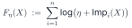
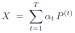
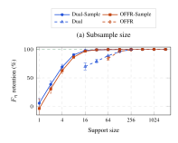
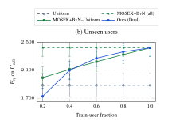

Attention concentrates on a few highly ranked items
On two-sided platforms such as e-commerce marketplaces, ranking policies allocate attention across large item catalogs. Because users examine only the top of a ranked list, attention concentrates on a small set of highly ranked items. Persistent disparities can discourage supply-side participation, shrink the available catalog, and ultimately weaken the long-run health of the platform itself.
Impact-based fair ranking maximizes the Nash social welfare
Consider m users and n items, where only the first K positions of a ranking are displayed. A stochastic ranking policy X gives the probability Xu,i,k that item i is placed at position k for user u. The expected impact received by item i, such as clicks, purchases, or revenue, is
where e(k) is the exposure probability of position k and r(u, i) is the relevance score of item i for user u. Impact-based fair ranking (Saito & Joachims, KDD 2022) maximizes the smoothed Nash social welfare (NSW)

where η > 0 is a smoothing parameter. Maximizers of the NSW satisfy three guarantees:
- Envy-freeness. No item prefers another item's allocation.
- Dominance over uniform ranking. Every item receives at least its uniform-ranking impact.
- Pareto optimality. No alternative policy improves some items without reducing another item's impact.
The first two hold when K = 1, and approximately for K > 1 when items have close substitutes in relevance. Slides of the original paper: Fair Ranking as Fair Division.
Serving the policy takes a user-coupled mixture of rankings
In deployment, the system must return one deterministic ranking per request, so a learned stochastic policy must be realized as an executable mixture of deterministic rankings:

Each of the T components P(t) contains one deterministic ranking per user, and αt is the probability of serving component t. Deployment storage therefore scales with the number of users times the mixture size. For instance, the Frank–Wolfe-based OFFR algorithm (Usunier et al., 2022) accumulates one component per iteration and stores T · m · K ranking entries, which is 4,915 MB on Last.fm-15k.
This user-coupled representation also does not cover unseen users, forcing the system to use a fallback ranking rule rather than the learned fair-ranking policy.
Every optimum is a mixture of at most n deterministic rankings
The objective depends on a policy only through the n item impacts. Because each impact is linear in the policy, the feasible impact vectors form a polytope, and optimality places the impact vector of an optimal policy on a face of it. By Carathéodory's theorem on that face, every optimal policy has an equivalent mixture with at most n deterministic components that preserves every item's impact, and hence the objective value. This support bound is worst-case tight.
However, each component still contains one ranking per user, so deployment storage still grows with the number of users.
One item-indexed dual vector is a ranking rule for any user
We change what is stored. Attaching a Lagrange multiplier λi to the impact of each item i gives a dual problem whose variables are indexed only by items. Given the dual vector λ, the remaining problem separates across users and is solved by sorting: user u is shown the K items with the largest scores
Thus one dual vector defines a deterministic ranking rule for any user. At the dual optimum, λi is large for items with low impact, so the rule moves such items up while r(u, i) keeps the ranking personalized.
To serve either a training user or an unseen user, the system uses only the stored dual vectors and that user's relevance scores. No retraining is required.
Learn dual vectors by mirror descent, then keep a weighted random subsample
Each iteration ranks every user with the current dual vector, measures the resulting item impacts, and takes a subgradient step in log space, which keeps the dual variables positive. This is a mirror-descent method. One step costs O(mn log K), and the weighted average of the policies along the trajectory converges to the optimum.
For serving, we retain only a sampled dual mixture: S dual vectors drawn from the T iterates by weighted random subsampling. Subsampling leaves the expected item impacts unchanged, and we prove a local preservation guarantee for the objective. The sampled dual mixture requires O(Sn) deployment storage, independent of the number of users, and serves any user in O(n log K) time.
Up to 2,596× less deployment storage while preserving the objective
Ours is the sampled dual mixture with S = 32, drawn from T = 2,048 iterates. The reference is a user-coupled mixture: MOSEK+BvN where the conic solver is tractable, and OFFR at larger scale.
| Dataset | Reference | Reference (MB) | Ours (MB) | Storage reduction | Fη shortfall |
|---|---|---|---|---|---|
| MovieLens-100Km = 943 · n = 1,574 · K = 5 | MOSEK+BvNconic solver + Birkhoff–von Neumann decomposition | 207.7 | 0.199 | 1,044× | 0.16% |
| MovieLens-1Mm = 3,000 · n = 3,595 · K = 40 | OFFR | 983.1 | 0.455 | 2,160× | 0.00% |
| Last.fm-15km = 15,000 · n = 14,975 · K = 40 | OFFR | 4,915 | 1.893 | 2,596× | 0.00% |
Storage counts only the deployment storage of the fair-ranking layer.
Relative to OFFR, the reduction factors into about 64× fewer stored components from subsampling (T / S) and 3–40× smaller components from the item-indexed dual representation (about mK / n). The price is one top-K selection over the user's relevance scores at serving time, with a 95th-percentile latency below 0.04 ms in our benchmark.


Both panels: MovieLens-100K with K = 5. Error bars show ±1σ over five market seeds.
BibTeX
@inproceedings{uehara2026compact,
title = {Compact Representations of Impact-Based Fair-Ranking Policies},
author = {Uehara, Yuki and Nishimura, Naoki and Sukegawa, Noriyoshi and Takano, Yuichi},
booktitle = {Advances in Neural Information Processing Systems},
year = {2026}
}